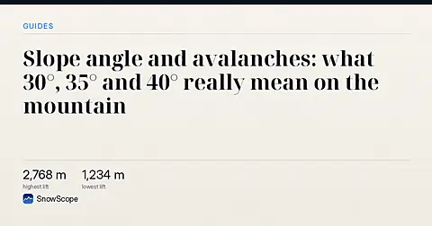

Les Grands Montets: 74 cm of New Snow in 72 Hours
Our snow model shows that Les Grands Montets received 74 cm of fresh snow in the last 72 hours, with 44 cm falling in the last 24 hours alone. This makes it one of the top spots for new snow in the Alps.
See the live snow forecast for Les Grands Montets in the SnowScope appSnow depth, powder alerts and the 3D map, free.
Significant Snowfall Across the Alps
The Alps have seen a notable increase in snow cover. As of November 17, 2026, our model shows 51,380 square kilometres of snow-covered area, with 772 resorts reporting snow. This is a decrease from November 15, when 65,120 square kilometres were covered, but a significant amount of new snow has fallen at higher elevations.
Looking ahead, the forecast suggests the snow-covered area will increase to 70,200 square kilometres by November 20, with 945 resorts expected to have snow. This indicates a positive trend for early season conditions.
| Resort | Snow depth | New snow, 72 h | Coming, next days | Top |
|---|---|---|---|---|
| La Grave | 113 cm | 79 cm | 92 cm | 3,543 m |
| Les Grands Montets | 53 cm | 74 cm | 98 cm | 2,768 m |
| Orelle | 108 cm | 74 cm | 102 cm | 3,221 m |
| Alpe d'Huez Grand Domaine | 78 cm | 72 cm | 85 cm | 3,306 m |
| Glacier 3000 | 46 cm | 67 cm | 91 cm | 2,931 m |

Rain up to the top?
On Tuesday 17 November the freezing level climbs to about 2,860 m, above the top of the lifts at 2,768 m: rain can fall even at the top.
Rain on fresh snow makes it heavy and, after a cold night, icy: the days after are better for groomed runs than for powder.
At about 2,001 m, Les Grands Montets has 22 cm today; a normal 17 November has 22 cm there.
That is more than in 24 of the 46 past winters on this date.
In past winters the best snow at Les Grands Montets usually came late February / early March.
Day by day at Les Grands Montets: Tuesday 17 November 44 cm; Wednesday 18 November 20 cm; Thursday 19 November 36 cm; Friday 20 November 42 cm.
Height by height at Les Grands Montets: 1,234 m 0 cm on the ground, 13 cm more in the next 7 days; 2,001 m 9 cm on the ground, 78 cm more in the next 7 days; 2,768 m 40 cm on the ground, 126 cm more in the next 7 days.
Where the Most Snow Fell
La Grave leads the region with 79 cm of new snow in the last 72 hours, including 40 cm in the last 24 hours. Les Grands Montets and Orelle also reported 74 cm of new snow over 72 hours. Alpe d'Huez Grand Domaine saw 72 cm, and Glacier 3000 in Switzerland received 67 cm.
For Les Grands Montets, the upper slopes currently have a modelled depth of 53 cm. The nearest station, CHAMONIX-OBS at 1043 m, measured no new snow on November 15, which is expected given its lower elevation compared to the resort's snow line.
Forecast for the Coming Days
More snow is expected. Les Grands Montets is forecast to receive another 98 cm in the next few days, with 20 cm on November 18, 36 cm on November 19, and 42 cm on November 20. La Grave is forecast for 92 cm and Orelle for 102 cm.
The freezing level at Les Grands Montets will remain mostly above the base, ranging from 1940 m to 2860 m over the next few days. This means that new snow will mainly fall at higher altitudes, above 1960 m, where the snow line is currently modelled.
Snow Depth Compared to Past Winters
At Les Grands Montets, the modelled snow depth at 2001 m is 9 cm today, November 17. This is lower than the usual 22 cm for this date, based on 46 past winters. However, the current depth is still deeper than 24 of those past winters, suggesting that while not exceptional, conditions are better than average for this time of year.
La Grave, at 3369 m, has a modelled depth of 99 cm, which is deeper than 10 of 46 past winters. This is a good start to the season for high-altitude areas.
Tips for skiers
- Focus on higher elevations for the best snow, as freezing levels are generally high. For Les Grands Montets, the top of the resort at 2768 m is expected to get 126 cm of new snow in the next 7 days.
- Be aware of avalanche danger. The avalanche danger level for Les Grands Montets, La Grave, and Orelle is 3 (considerable) today. Always check the official avalanche bulletin (Météo-France BERA) before going off-piste.
- Early season conditions mean that snow cover can be thin in places, especially at lower altitudes. Rocks and other hazards may be present under the snow.
- The snow line at Les Grands Montets is modelled at 1960 m, so expect mixed conditions below this height. Snow depth at the base (1234 m) is currently modelled at 0 cm.
About these numbers
Resort snow depths are the deepest snow on the resort's upper slopes from the SnowScope snow model (about 1 km, run of 16 November); they are estimates for an area, not a measurement at one point. Station values are measurements on the date shown. Forecasts can change. Always read the official avalanche bulletin before going off-piste.
Official avalanche bulletins: Météo-France BERA
Cite this report
For research, teaching or the press: the numbers and charts are free to reuse under CC BY 4.0 with this citation.
SnowScope (2026), Les Grands Montets: 74 cm of New Snow in 72 Hours, https://snowscope.app/blog/en/2026/11/alps-les-grands-montets-fresh-snow-powder-alert-17-november-2026.html, accessed 2026-11-17
SnowScope (Atlas Labs). (2026, November 17). Les Grands Montets: 74 cm of New Snow in 72 Hours. SnowScope snow reports. https://snowscope.app/blog/en/2026/11/alps-les-grands-montets-fresh-snow-powder-alert-17-november-2026.html
BibTeX
@misc{snowscope2026alpslesgrandsmontetsfres,
author = {{SnowScope (Atlas Labs)}},
title = {Les Grands Montets: 74 cm of New Snow in 72 Hours},
year = {2026},
month = nov,
howpublished = {\url{https://snowscope.app/blog/en/2026/11/alps-les-grands-montets-fresh-snow-powder-alert-17-november-2026.html}},
note = {Published 2026-11-17 12:53 UTC; accessed 2026-11-17}
}· CC BY 4.0 · Methods, data and tools →
Les Grands Montets: snow and temperature by height, this winter vs last (tools) →
Follow Les Grands Montets
Free: a message when fresh snow is coming, and the forecast every morning.
More snow reports

Alpe d'Huez faces the sun. How to plan a day by the clock and by height, with the snow of 46 past winters from the low villages to Pic Blanc.

79 cm new snow forecast for Les Grands Montets from 16–18 November, mostly above 2000 m elevation, based on forecast from 15 November.

A slope map of Les Grands Montets and seven other ski areas shows how much of the ground is steeper than 30°, 35° and 40°, and why that line matters for avalanches.